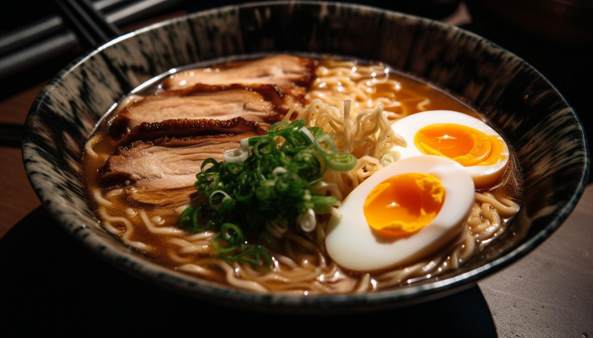

RECETA TONKOSTU

" Como sabréis, la palabra japonesa 特撮 tokusatsu viene a significar literalmente algo como “filmación especial”; básicamente,
y a grandes rasgos, es lo que conocemos en cine como “efectos especiales”. Sin embargo, la palabra tokusatsu ha cobrado un sentido
más concreto que ese y se ha incorporado al vocabulario internacional al igual que otras palabras como anime, manga, otaku, etcétera.
(Definición según MangaLand)"
INGREDIENTES
Caldo tonkotsu
- 1,25 kg de espinazo de cerdo
- 1,25 kg de huesos de babilla de cerdo
- 50 g de kombu
- 5 litros de agua (reducidos a 2 litros de caldo)
Sopa de ramen tonkotsu
- 600 ml de caldo tonkotsu
- 50g de salsa de soja
- 10 g de Honteri
- 2 g de sal
- 2 dientes de ajo picados
Cerdo char shu
- 500 g de panceta de cerdo enrollada
- 1 litro de agua
- 60 g de azúcar
- 50g de Honteri
- 15 g de ajo picado
- 8 g de jengibre fresco laminado
- 1 chile finamente picado
Aceite aromatizado
- 280 g de tocino dorsal de cerdo
- 5 g de ajo picado
- 15 g de carne picada de cerdo
Huevo ramen
Otros ingredientes para añadir por encima
- Aceite de chile
- Cebolleta en rodajas finas